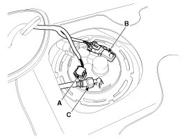
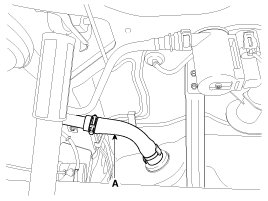
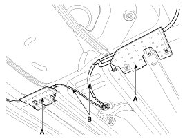
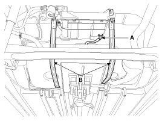

Fuel Tank: Service and Repair
Removal
1. Release the residual pressure in fuel line .
2. Remove the rear seat cushion .
3. Remove the fuel pump service cover (A).

4. Disconnect the fuel pump connector (A) and the fuel tank pressure sensor connector (B).
5. Disconnect the fuel feed tube quick connector (C).

6. Remove the rear - LH wheel & tire.
7. Lift the vehicle and support the fuel tank with a jack.
8. Remove the center muffler assembly .
9. Disconnect the fuel filler hose (A).

10. Remove the under cover (A) and the parking brake line (B).

11. Disconnect the vapor tube quick-connector (A).
12. Remove the fuel tank from the vehicle after removing the fuel tank band (B).

NOTE:
When removing the fuel tank, the fuel tank must be tilted because of interfering with coupling.
Installation
1. Installation is reverse of removal.
Fuel tank band installation nut:
39.2 - 54.0 N.m (4.0 - 5.5 kgf.m, 28.9 - 39.8 lb-ft)